うちの子製作所
画像1枚でなんでもフィギュア化できるプラットフォーム
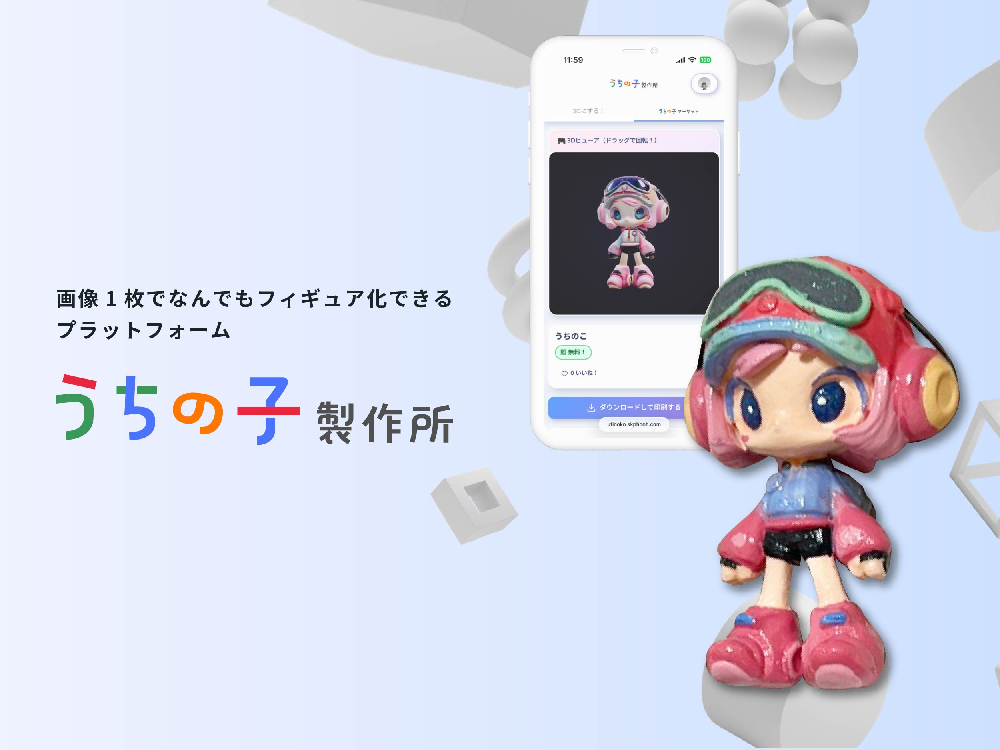
01Overview — 1枚の写真が、フィギュアになる。
写真を1枚アップロードするだけでAIが3Dデータを自動生成。 モデリングの専門知識がなくても、30秒〜2分で3Dプリントできるデータが完成します。
つくる
友達と撮った写真を
フィギュアにしたい!
発信する
クリエイターとしてオリジナル
キャラクターを有名にしたい!
売る
自社のIPを
もっと広めたい
02Project Info
- 受賞
- Hack-1グランプリ2026 オーディエンス賞 (1/19), セガサミーイノベーション賞 (3/19)
- ツール
- 製作期間
- 4週間(2026.4.12〜5.10)
- メンバー
- 2人
- 役割
- デザイナー, プロジェクトマネージャー
03Process — 4週間のハッカソン
Hack-1グランプリ2026のテーマは『小さくなる日本』、審査コンセプトは「Move Hands. Move Hearts.」。 「ネットの力を使ってモノの世界を小さくしよう」という着想から、 誰でも簡単にオリジナルフィギュアが作れるサービスをコンセプトに掲げ、4週間で形にしました。
5つのアイデアから「本当に使いたいか」「実装可能か」の2軸で選定
3D印刷を実際に体験して課題を整理。ロゴとWebサイトの初版を製作
「つくる・発信する・売る」に再定義。友人・メンターのレビューを反映
ひな壇形式の展示物、デモ動画、最終資料を製作
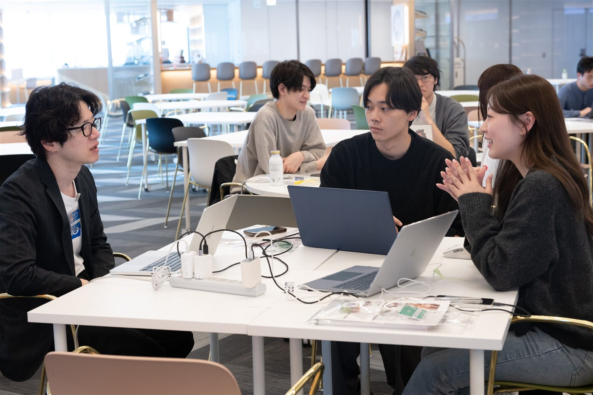
04How it works — 撮ってから、届くまで。
スマホだけで完結。撮影からフィギュアの印刷開始まで、最短4ステップです。
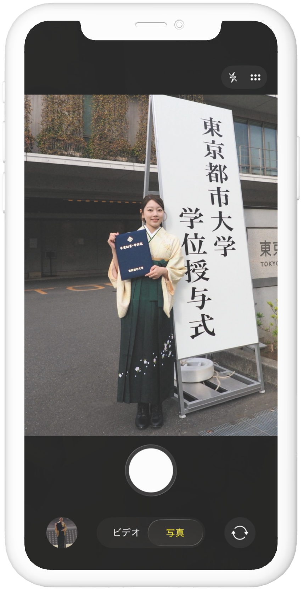
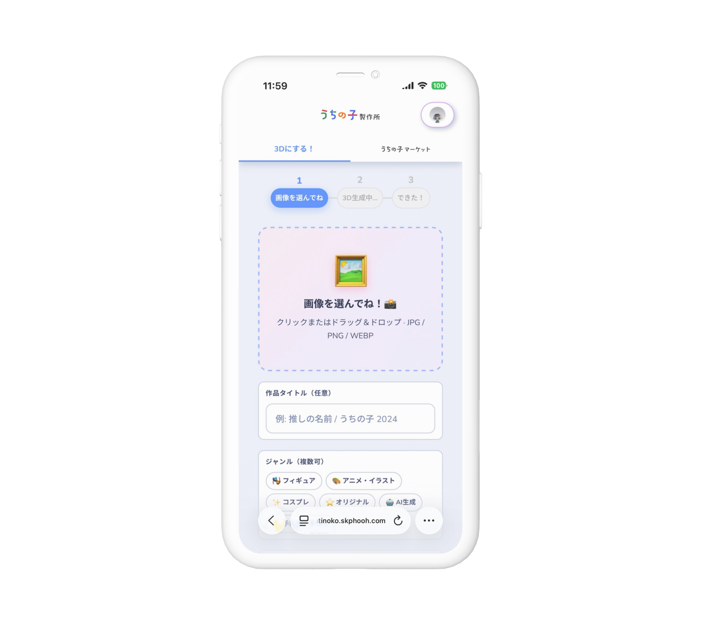
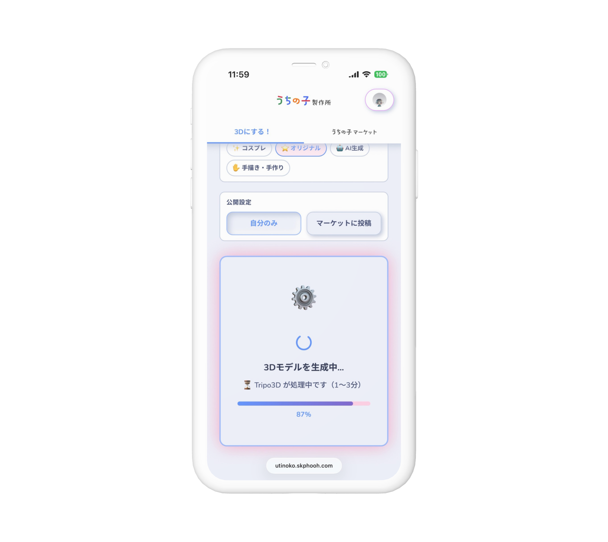
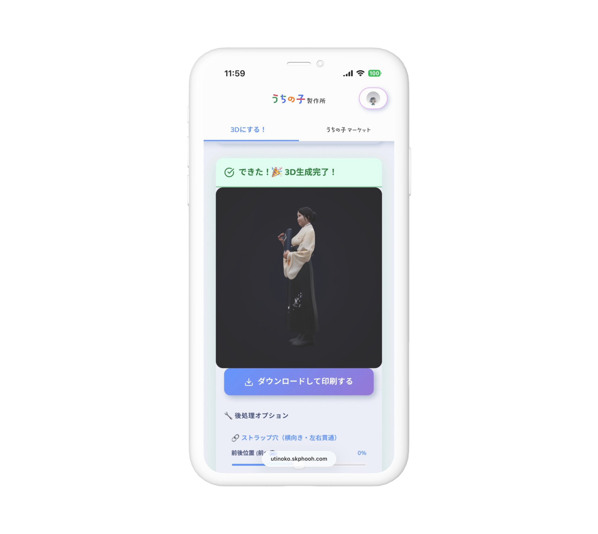
裏側では、アップロードされた画像に対して3つの処理をワンボタンで実行しています。 モデリングに渡す情報を増やすことで、「速い・簡単・正確」な3D生成を実現しました。
| 従来 | うちの子製作所 | |
|---|---|---|
| 生成時間 | 5分 | 30秒〜2分 |
| 入力画像 | 透過背景画像 | 通常画像でOK |
| 必要な機材 | PC+専用ソフト | スマホだけ |
05Design — こだわったところ
担当したロゴ・UI・仕組みの設計では、「使う人が迷わないこと」を最優先にしました。 UIはClaude Codeを使ったバイブコーディングで設計しています。
- ロゴ — 思わず自慢したくなるオリジナル作品を「うちの子」と定義し、ものづくりの自由さを原色に近いカラフルな色合いで表現。
- シンプルな切り替え — 不要なページは削除し、3Dモデリングページとマーケットページをすぐに切り替えられるタブ構成に。
- 進捗バーの表示 — ゴールを明確に見せることで、生成待ちの間にユーザーが離脱するのを防止。
- 作品の一覧表示 — 一覧には静止画を使いデータ量を大幅に削減。快適な表示速度と高い視認性を両立。
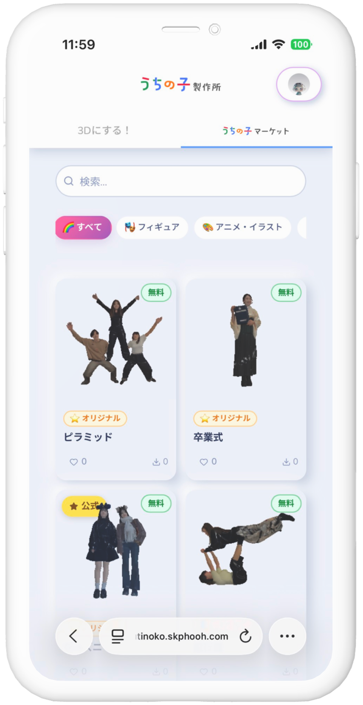
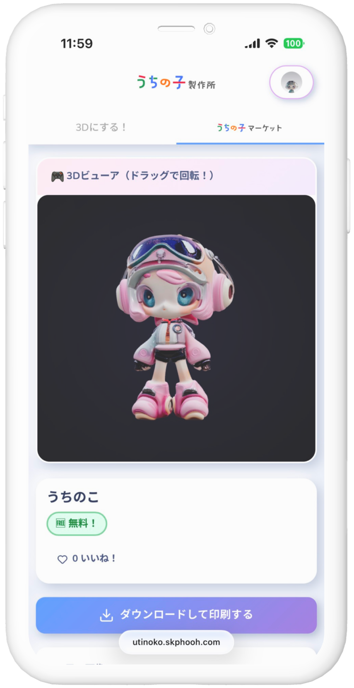
06Result — ダブル受賞
東京大学福武ホールでの最終発表では、30秒ピッチと展示ブースでの発表で審査が行われ、 19チーム中オーディエンス賞(1位)とセガサミーイノベーション賞(3位)のダブル受賞を果たしました。 展示は想像以上に多くの人が集まり、フィギュアを手に取ってもらえるよう足の裏に磁石を付けるなど、 体験してもらうための設計にもこだわりました。
審査では「AIによって表面的なクオリティの差が出にくくなっている現代において、 勝敗を決めるのは作品のストーリーやコンセプトそのものである」という講評をいただき、 直感的に伝わるビジュアル表現と深みのあるコンセプトメイキングの両立という、 今後の制作における重要な指針を得ました。
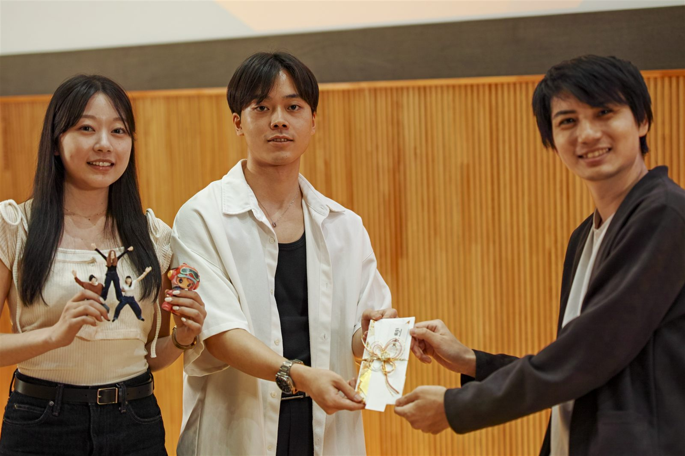
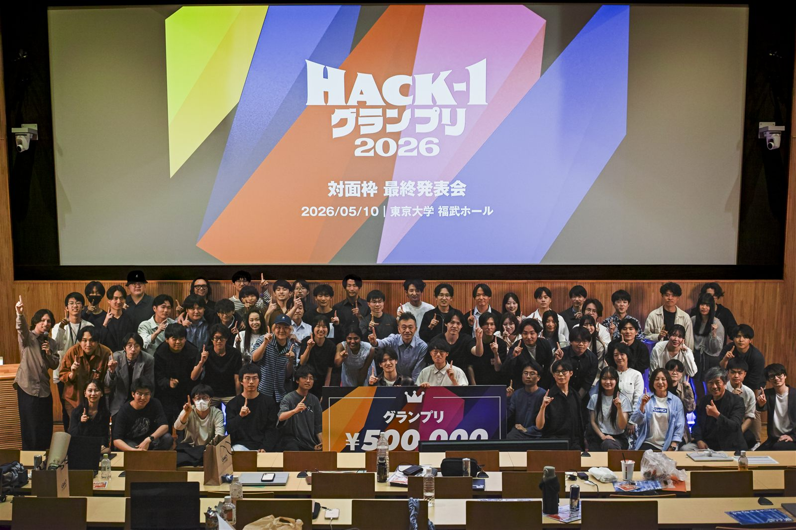
07Gallery — 展示ブース
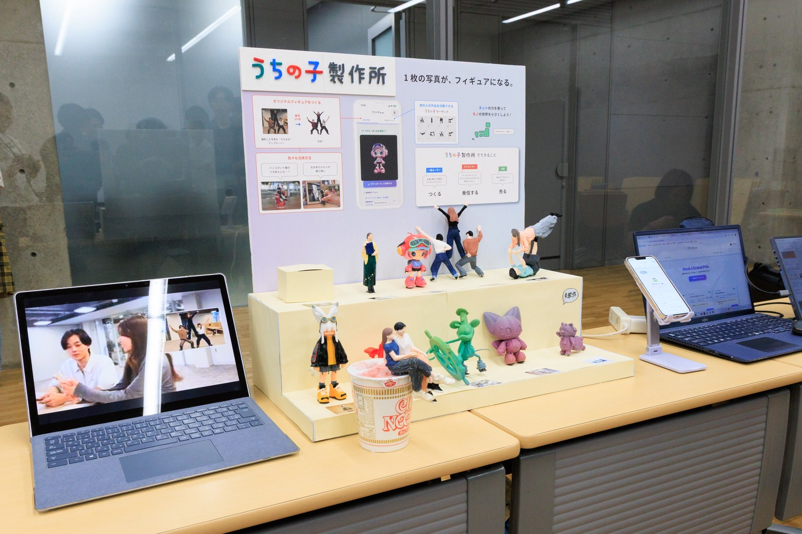
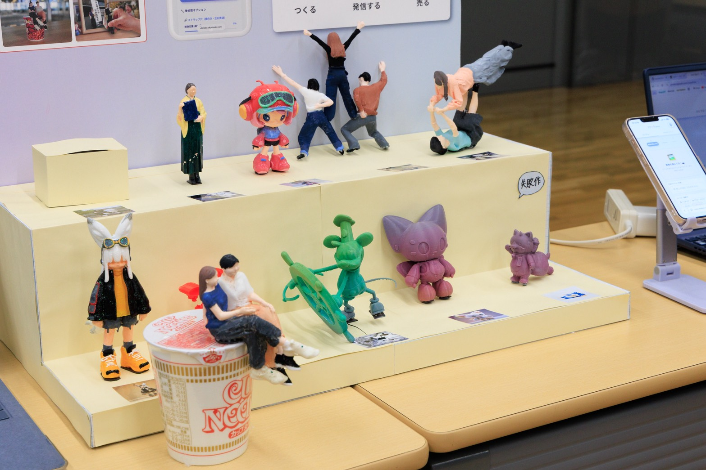
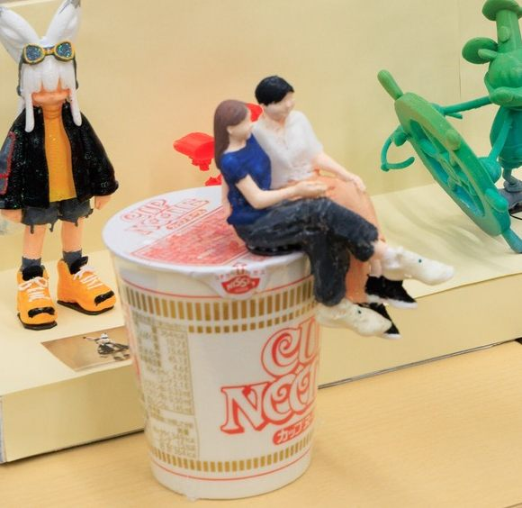